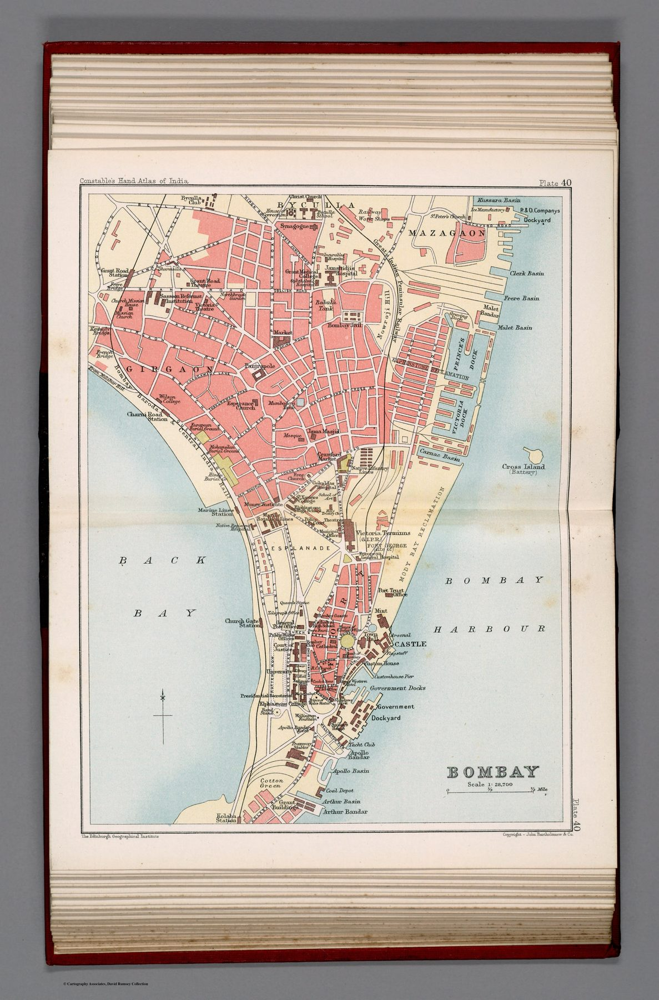

← Home Ground Bombay and Deccan

The city plate
Plate 40, at approximately 1:28,700, is the closest-scale object in the Bombay room and pairs with the map of the city’s wider environs that follows it.
Civic information
The plan identifies streets, blocks, parks, post and police facilities, public buildings and harbour-side infrastructure. Such detail is useful to the visitor, resident and administrator alike; the same sheet can orient movement and display institutions of government.
From island to city
Earlier maps in the room approach Bombay as anchorage or harbour. By 1893 the subject is a dense urban fabric whose internal divisions can be fixed and indexed. The map records the transformation of an island port into an imperial metropolis.
The gaze
Police stations are marked with the same care as parks. On a plan of this kind the two belong together: both are fixtures of a city governed by provision and by supervision, and the visitor who used the sheet to find a garden was also being shown where order was kept.